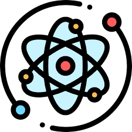

¿Que es la fisica cuantica?
11/10/22
¿De que trata la fisica cuantica?
La física cuántica es una rama de la ciencia que se encarga de estudiar la ciencia desde la rama atómica hasta la subatómica. Es decir, estudia el mundo de lo microscópico: desde los átomos hasta los protones y neutrones
Investigación
¿Qué es?
La física cuántica es uno de los grandes logros del intelecto humano y es la base de la comprensión de los fenómenos naturales. La física clásica es un límite de la cuántica. La física cuántica explica el átomo, el enlace químico, las moléculas, la interacción de la luz con las partículas, la materia
Aunque la física cuántica describe el mundo a escala atómica podemos observar sus consecuencias a escala macroscópica en las propiedades térmicas (como la radiación), ópticas (como los colores), eléctricas (como la clasificación entre aislantes, metales y semiconductores en los sólidos cristalinos) y magnéticas
Fundacion WordPressYa conocido esto podemos saber que la fisica cuantica es el tipo de fisica que estudia la base de todo lo que conocemos, de que esta hecho todo, que existe que no podemos ver, cosas como la radiacion, las cosas electricas y demas, cosas que aunque siempre nos afectan y que al día a día por eso vivimos, pero que al final no podemos ver y estamos tratando de comprobar
Gato de Schrödinger
El gato de Schrödinger es un experimento mental, a veces descrito como una paradoja, ideado por el físico austriaco-irlandés Erwin Schrödinger en 1935, durante el curso de discusiones con Albert Einstein. Ilustra lo que él vio como el problema de la interpretación de Copenhague de la mecánica cuántica. El escenario presenta un gato hipotético que puede estar simultáneamente vivo y muerto,un estado conocido como superposición cuántica, como resultado de estar vinculado a un evento subatómico aleatorio que puede ocurrir o no.
Muy interesanteEste subtema se trata de este "experimento mental" o teoria, ya que es uno de los experimentos más famosos de la fisica cuantica, incluso ganador de un premio nobel, este experimento nos habla de cosas muy cosas
Este experimento es uno de los mejores para introducirte a este mundo cuantico por si quieres empezar a aprender de fisica cuantica, ya que es un modelo que nos explica sobre como un atomo puede cambiar los resultados deseados por mucho
Para terminar, este experimento puede tener muchas variantes, y eso es lo que hace fascinante la fisica cuantica, ya que no estan clavados siempre con una misma idea, por eto es que cambia todo el rato los estudios cuanticos
Modelos atomicos
En el mundo cuantico existe una molecula escencial para todo, y esa es "El atomo" pero, ¿Como es el atomo? pues no se abe con exactitud pero los scientificos han creado muchos modelos atomicos, obviamente cada modelo es distinto y mejor a travez de los tiempos
Hay 7 modelos existentes registrados
- Modelo atomico de Dalton
- Modelo atomico de Thomson
- Modelo atomico de Perrin
- Modelo atomico de Rutherford
- Modelo atomico de Bhor
- Modelo atomico de Sommerfield
- Modelo atomico de Schrödinger
Desde el primero que fue el de dalton, hasta el ultimo, ha habido un cambio enorme en cada uno de ellos, obviamente cada uno con relacion al otro ya que si nos damos cuenta el modelo de dalton, esta en el interior del modelo de Rutherford, y asi existen relacion entre cada uno.